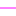

<!doctype html>
<html lang="en">
    <head>
        <meta charset="utf-8">
        <meta http-equiv="X-UA-Compatible" content="IE=edge">
        <meta name="viewport" content="initial-scale=1,user-scalable=no,maximum-scale=1,width=device-width">
        <meta name="mobile-web-app-capable" content="yes">
        <meta name="apple-mobile-web-app-capable" content="yes">
        <link rel="stylesheet" href="css/leaflet.css"><link rel="stylesheet" href="css/L.Control.Locate.min.css">
        <link rel="stylesheet" href="css/qgis2web.css"><link rel="stylesheet" href="css/fontawesome-all.min.css">
        <link rel="stylesheet" href="css/leaflet-control-geocoder.Geocoder.css">
        <link rel="stylesheet" href="css/leaflet-measure.css">
        <style>
        html, body, #map {
            width: 100%;
            height: 100%;
            padding: 0;
            margin: 0;
        }
        </style>
        <title></title>
    </head>
    <body>
        <div id="map">
        </div>
        <script src="js/qgis2web_expressions.js"></script>
        <script src="js/leaflet.js"></script><script src="js/L.Control.Locate.min.js"></script>
        <script src="js/leaflet.rotatedMarker.js"></script>
        <script src="js/leaflet.pattern.js"></script>
        <script src="js/leaflet-hash.js"></script>
        <script src="js/Autolinker.min.js"></script>
        <script src="js/rbush.min.js"></script>
        <script src="js/labelgun.min.js"></script>
        <script src="js/labels.js"></script>
        <script src="js/leaflet-control-geocoder.Geocoder.js"></script>
        <script src="js/leaflet-measure.js"></script>
        <script src="data/UPVIIWonokromo_0.js"></script>
        <script src="data/JaringanJalanUPVIIWonokromo_1.js"></script>
        <script src="data/RuteKegiatanTrukSampah_2.js"></script>
        <script src="data/Servicearealines_3.js"></script>
        <script src="data/PointKesehatan_4.js"></script>
        <script>
        var highlightLayer;
        function highlightFeature(e) {
            highlightLayer = e.target;

            if (e.target.feature.geometry.type === 'LineString') {
              highlightLayer.setStyle({
                color: '#ffff00',
              });
            } else {
              highlightLayer.setStyle({
                fillColor: '#ffff00',
                fillOpacity: 1
              });
            }
        }
        var map = L.map('map', {
            zoomControl:true, maxZoom:28, minZoom:1
        }).fitBounds([[-7.310893680939324,112.69688333570124],[-7.264360287842835,112.76648759228333]]);
        var hash = new L.Hash(map);
        map.attributionControl.setPrefix('<a href="https://github.com/tomchadwin/qgis2web" target="_blank">qgis2web</a> &middot; <a href="https://leafletjs.com" title="A JS library for interactive maps">Leaflet</a> &middot; <a href="https://qgis.org">QGIS</a>');
        var autolinker = new Autolinker({truncate: {length: 30, location: 'smart'}});
        L.control.locate({locateOptions: {maxZoom: 19}}).addTo(map);
        var measureControl = new L.Control.Measure({
            position: 'topleft',
            primaryLengthUnit: 'meters',
            secondaryLengthUnit: 'kilometers',
            primaryAreaUnit: 'sqmeters',
            secondaryAreaUnit: 'hectares'
        });
        measureControl.addTo(map);
        document.getElementsByClassName('leaflet-control-measure-toggle')[0]
        .innerHTML = '';
        document.getElementsByClassName('leaflet-control-measure-toggle')[0]
        .className += ' fas fa-ruler';
        var bounds_group = new L.featureGroup([]);
        function setBounds() {
        }
        function pop_UPVIIWonokromo_0(feature, layer) {
            layer.on({
                mouseout: function(e) {
                    for (i in e.target._eventParents) {
                        e.target._eventParents[i].resetStyle(e.target);
                    }
                },
                mouseover: highlightFeature,
            });
        }

        function style_UPVIIWonokromo_0_0() {
            return {
                pane: 'pane_UPVIIWonokromo_0',
                opacity: 1,
                color: 'rgba(35,35,35,1.0)',
                dashArray: '',
                lineCap: 'butt',
                lineJoin: 'miter',
                weight: 1.0, 
                fill: true,
                fillOpacity: 1,
                fillColor: 'rgba(231,113,72,1.0)',
                interactive: true,
            }
        }
        map.createPane('pane_UPVIIWonokromo_0');
        map.getPane('pane_UPVIIWonokromo_0').style.zIndex = 400;
        map.getPane('pane_UPVIIWonokromo_0').style['mix-blend-mode'] = 'normal';
        var layer_UPVIIWonokromo_0 = new L.geoJson(json_UPVIIWonokromo_0, {
            attribution: '',
            interactive: true,
            dataVar: 'json_UPVIIWonokromo_0',
            layerName: 'layer_UPVIIWonokromo_0',
            pane: 'pane_UPVIIWonokromo_0',
            onEachFeature: pop_UPVIIWonokromo_0,
            style: style_UPVIIWonokromo_0_0,
        });
        bounds_group.addLayer(layer_UPVIIWonokromo_0);
        map.addLayer(layer_UPVIIWonokromo_0);
        function pop_JaringanJalanUPVIIWonokromo_1(feature, layer) {
            layer.on({
                mouseout: function(e) {
                    for (i in e.target._eventParents) {
                        e.target._eventParents[i].resetStyle(e.target);
                    }
                },
                mouseover: highlightFeature,
            });
        }

        function style_JaringanJalanUPVIIWonokromo_1_0() {
            return {
                pane: 'pane_JaringanJalanUPVIIWonokromo_1',
                opacity: 1,
                color: 'rgba(190,207,80,1.0)',
                dashArray: '',
                lineCap: 'square',
                lineJoin: 'bevel',
                weight: 1.0,
                fillOpacity: 0,
                interactive: true,
            }
        }
        map.createPane('pane_JaringanJalanUPVIIWonokromo_1');
        map.getPane('pane_JaringanJalanUPVIIWonokromo_1').style.zIndex = 401;
        map.getPane('pane_JaringanJalanUPVIIWonokromo_1').style['mix-blend-mode'] = 'normal';
        var layer_JaringanJalanUPVIIWonokromo_1 = new L.geoJson(json_JaringanJalanUPVIIWonokromo_1, {
            attribution: '',
            interactive: true,
            dataVar: 'json_JaringanJalanUPVIIWonokromo_1',
            layerName: 'layer_JaringanJalanUPVIIWonokromo_1',
            pane: 'pane_JaringanJalanUPVIIWonokromo_1',
            onEachFeature: pop_JaringanJalanUPVIIWonokromo_1,
            style: style_JaringanJalanUPVIIWonokromo_1_0,
        });
        bounds_group.addLayer(layer_JaringanJalanUPVIIWonokromo_1);
        map.addLayer(layer_JaringanJalanUPVIIWonokromo_1);
        function pop_RuteKegiatanTrukSampah_2(feature, layer) {
            layer.on({
                mouseout: function(e) {
                    for (i in e.target._eventParents) {
                        e.target._eventParents[i].resetStyle(e.target);
                    }
                },
                mouseover: highlightFeature,
            });
        }

        function style_RuteKegiatanTrukSampah_2_0() {
            return {
                pane: 'pane_RuteKegiatanTrukSampah_2',
                opacity: 1,
                color: 'rgba(125,139,143,1.0)',
                dashArray: '',
                lineCap: 'square',
                lineJoin: 'bevel',
                weight: 1.0,
                fillOpacity: 0,
                interactive: true,
            }
        }
        map.createPane('pane_RuteKegiatanTrukSampah_2');
        map.getPane('pane_RuteKegiatanTrukSampah_2').style.zIndex = 402;
        map.getPane('pane_RuteKegiatanTrukSampah_2').style['mix-blend-mode'] = 'normal';
        var layer_RuteKegiatanTrukSampah_2 = new L.geoJson(json_RuteKegiatanTrukSampah_2, {
            attribution: '',
            interactive: true,
            dataVar: 'json_RuteKegiatanTrukSampah_2',
            layerName: 'layer_RuteKegiatanTrukSampah_2',
            pane: 'pane_RuteKegiatanTrukSampah_2',
            onEachFeature: pop_RuteKegiatanTrukSampah_2,
            style: style_RuteKegiatanTrukSampah_2_0,
        });
        bounds_group.addLayer(layer_RuteKegiatanTrukSampah_2);
        map.addLayer(layer_RuteKegiatanTrukSampah_2);
        function pop_Servicearealines_3(feature, layer) {
            layer.on({
                mouseout: function(e) {
                    for (i in e.target._eventParents) {
                        e.target._eventParents[i].resetStyle(e.target);
                    }
                },
                mouseover: highlightFeature,
            });
        }

        function style_Servicearealines_3_0() {
            return {
                pane: 'pane_Servicearealines_3',
                opacity: 1,
                color: 'rgba(255,0,255,1.0)',
                dashArray: '',
                lineCap: 'square',
                lineJoin: 'bevel',
                weight: 1.0,
                fillOpacity: 0,
                interactive: true,
            }
        }
        map.createPane('pane_Servicearealines_3');
        map.getPane('pane_Servicearealines_3').style.zIndex = 403;
        map.getPane('pane_Servicearealines_3').style['mix-blend-mode'] = 'normal';
        var layer_Servicearealines_3 = new L.geoJson(json_Servicearealines_3, {
            attribution: '',
            interactive: true,
            dataVar: 'json_Servicearealines_3',
            layerName: 'layer_Servicearealines_3',
            pane: 'pane_Servicearealines_3',
            onEachFeature: pop_Servicearealines_3,
            style: style_Servicearealines_3_0,
        });
        bounds_group.addLayer(layer_Servicearealines_3);
        map.addLayer(layer_Servicearealines_3);
        function pop_PointKesehatan_4(feature, layer) {
            layer.on({
                mouseout: function(e) {
                    for (i in e.target._eventParents) {
                        e.target._eventParents[i].resetStyle(e.target);
                    }
                },
                mouseover: highlightFeature,
            });
        }

        function style_PointKesehatan_4_0() {
            return {
                pane: 'pane_PointKesehatan_4',
                radius: 4.0,
                opacity: 1,
                color: 'rgba(35,35,35,1.0)',
                dashArray: '',
                lineCap: 'butt',
                lineJoin: 'miter',
                weight: 1,
                fill: true,
                fillOpacity: 1,
                fillColor: 'rgba(196,60,57,1.0)',
                interactive: true,
            }
        }
        map.createPane('pane_PointKesehatan_4');
        map.getPane('pane_PointKesehatan_4').style.zIndex = 404;
        map.getPane('pane_PointKesehatan_4').style['mix-blend-mode'] = 'normal';
        var layer_PointKesehatan_4 = new L.geoJson(json_PointKesehatan_4, {
            attribution: '',
            interactive: true,
            dataVar: 'json_PointKesehatan_4',
            layerName: 'layer_PointKesehatan_4',
            pane: 'pane_PointKesehatan_4',
            onEachFeature: pop_PointKesehatan_4,
            pointToLayer: function (feature, latlng) {
                var context = {
                    feature: feature,
                    variables: {}
                };
                return L.circleMarker(latlng, style_PointKesehatan_4_0(feature));
            },
        });
        bounds_group.addLayer(layer_PointKesehatan_4);
        map.addLayer(layer_PointKesehatan_4);
        var osmGeocoder = new L.Control.Geocoder({
            collapsed: true,
            position: 'topleft',
            text: 'Search',
            title: 'Testing'
        }).addTo(map);
        document.getElementsByClassName('leaflet-control-geocoder-icon')[0]
        .className += ' fa fa-search';
        document.getElementsByClassName('leaflet-control-geocoder-icon')[0]
        .title += 'Search for a place';
        var baseMaps = {};
        L.control.layers(baseMaps,{' Point Kesehatan': layer_PointKesehatan_4,' Service area (lines)': layer_Servicearealines_3,' Rute Kegiatan Truk Sampah': layer_RuteKegiatanTrukSampah_2,' Jaringan Jalan UP VII Wonokromo': layer_JaringanJalanUPVIIWonokromo_1,' UP VII Wonokromo': layer_UPVIIWonokromo_0,},{collapsed:false}).addTo(map);
        setBounds();
        </script>
    </body>
</html>
